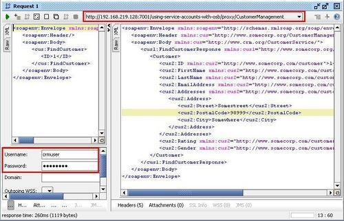
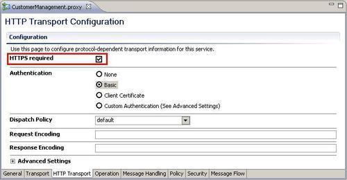
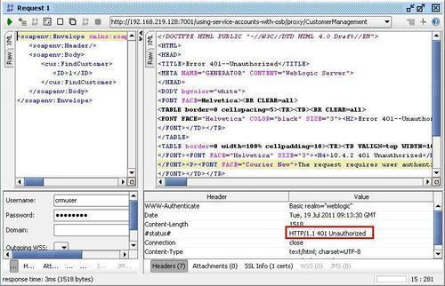
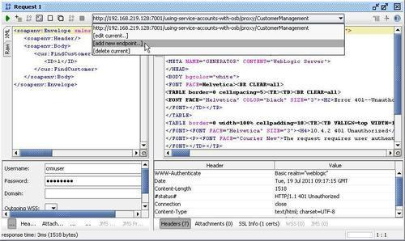
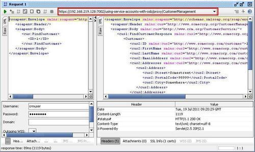

In this recipe, we will configure a proxy service to use transport-level security based on HTTPS. By that we can ensure that the communication between the consumer and the OSB service is encrypted, but the proxy service gets the message in plain text.
If message-level security is necessary, where the message itself is encrypted, a recipe such as Securing a proxy service by protecting the message covered in Chapter 11, Handling Message-level Security Requirements, should be considered.
Make sure the OSB server is configured to work with SSL by applying the previous recipe Preparing the OSB server to work with SSL.
Make sure the solution from the recipe Using service accounts with OSB for basic authentication is available in Eclipse OEPE. If not, import it from here: \chapter-12\solution\using-service-accounts-with-osb. Make sure you import both the using-service-accounts-with-osb and the using-service-accounts-with-osb-mockservice projects. Deploy the two projects to the OSB server.
Import the soapUI project from \chapter-12\solution\using-service-accounts-with-osb\soapui into soapUI and execute Request 1 of the FindCustomer operation.

You can see that we are using HTTP by checking the endpoint on the top and that we pass the crmuser for basic authentication.
Let's now configure the proxy service so that the request is sent securely over SSL using HTTPS.
In Eclipse OEPE, perform the following steps:
proxy folder.
Now, let's test the behavior of our proxy service. In soapUI, perform the following steps:


https://192.168.219.128:7002/using-service-accounts-with-osb/proxy/CustomerManagement into the Add new endpoint for interface field. We will need to change to https and replace the port with 7002.
We have now successfully added transport-level security by changing the protocol from HTTP to HTTPS on the proxy service.
By simply enabling the HTTPS option required on the proxy services we can enforce that a consumer uses HTTPS to communicate with the OSB service. This only works if SSL is enabled on the WebLogic server beforehand.
By doing this, basic authentication is more secure, because the username/password is no longer sent as plain text over the communication channel. But on the OSB server in the proxy service, the message is still readable. We can check that by just adding a log action into the message flow of the proxy service and log the value of the $body variable. If the message should also be protected inside the OSB, then we have to use message-level security covered in Chapter 11, Handling Message-level Security Requirements, and apply a recipe such as the Securing a proxy service by protecting the message.